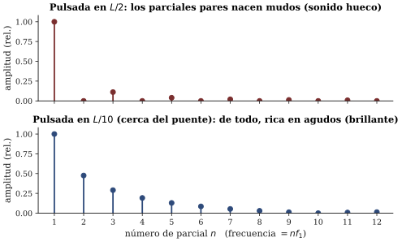
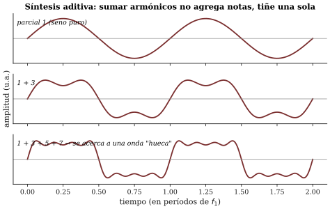

La receta del timbre: cuerda pulsada, punto de excitación, síntesis aditiva
Sesión 04 · Curso Acústica Musical UC Objetivos que cubre: OA1.1 (la receta de vibración: qué modos enciende la pulsación y cómo se lee en el espectro), OA1.2 (predecir el efecto del punto de pulsación y de tensión/longitud/masa sobre la afinación), OA2.1 (espectro↔︎timbre: misma nota, distinta receta).
¿Cambió la nota o cambió el timbre?
Su ticket de s03 preguntaba qué pasa al pulsar la misma cuerda en el medio o pegado al puente. En la sesión lo comprobó con el espectrograma: las líneas aparecen en las mismas frecuencias — la nota no se mueve un milímetro — pero el reparto de energía entre ellas cambia por completo. Al medio, la energía se concentra en los primeros parciales y el sonido es redondo, casi aflautado; junto al puente, los parciales altos cobran fuerza y el sonido se vuelve delgado y metálico.
Esto tiene una explicación exacta con lo que usted ya sabe. La cuerda tiene su repertorio fijo de modos (f_n = n f_1: eso fija la nota) y la pulsación no puede inventarle frecuencias nuevas — solo decide con cuánta energía se enciende cada modo del repertorio. Esa lista de amplitudes, parcial por parcial, es lo que Benade (1990, cap. 7) llama la receta de vibración, y es la mejor definición operativa de timbre que el curso va a manejar: la nota es qué frecuencias; el timbre empieza en cuánto de cada una.
La regla de la receta: pulsar es lo contrario de apagar
¿Y qué decide la receta? El punto de pulsación, con una regla que se deduce del mapa de nodos de s03. Pulsar la cuerda en un punto es imponerle un movimiento inicial justo ahí. Un modo que en ese punto se mueve mucho — que tiene un antinodo ahí — puede absorber ese movimiento: se enciende con fuerza. Un modo que tiene un nodo en el punto de pulsación no puede moverse ahí por definición: la púa no tiene cómo entregarle energía y queda mudo.
La regla, en una frase: pulsar en un punto enciende los modos que se mueven en ese punto y silencia los que tienen un nodo ahí.
Recuerde el dedo sobre la tapa de olla en s03: apoyado en un punto, apagaba los modos que se movían ahí y perdonaba los que tenían nodo. La púa y el dedo leen exactamente el mismo mapa, con la palanca invertida: pulsar enciende lo que se mueve; tocar apaga lo que se mueve. Toda la sesión cabe en esa simetría.
Apliquémosla, como en el taller. Pulsada en el medio (L/2): todos los modos pares (2, 4, 6…) tienen nodo justo ahí, así que nacen mudos — la receta queda solo con impares, y ese espectro “salteado” produce el sonido hueco que usted oyó y midió. Pulsada cerca del puente: casi ningún modo tiene nodo tan cerca del extremo, así que se enciende un poco de todos — receta pareja, rica en agudos, sonido brillante. En general, pulsar en un punto a 1/n del largo silencia el modo n y sus múltiplos. Los guitarristas ejecutan esta física cada vez que mueven la mano derecha: sul tasto y sul ponticello son ajustes de receta.

Los armónicos naturales del taller son la tercera cara de la misma moneda: el dedo apoyado suavemente sobre el traste 12 (L/2) apaga todo lo que se mueve ahí y deja sonar únicamente los modos con nodo en ese punto — los pares — y por eso emerge la octava (2f_1); en el tercio (L/3, traste 7) sobreviven los múltiplos de 3 y suena 3f_1. Tocar el nodo es tocar el armónico: el músico selecciona un subconjunto del repertorio con la punta del dedo.
Recuadro opcional (para quienes vienen de ingeniería). Para la cuerda ideal pulsada en x_0, la amplitud del modo n es proporcional a \sin(n\pi x_0/L)/n^2: el seno codifica el mapa de nodos (se anula cuando el modo n tiene nodo en x_0) y el factor 1/n^2 refleja la forma triangular inicial de la cuerda (Benade 1990, cap. 7, sec. 7.3; ROS cap. 10). La púa real suaviza aún más los agudos: una púa ancha o un dedo blando reparten el contacto sobre un tramo de cuerda y “borran” los modos cuya media longitud de onda cabe en ese tramo — por eso uña y yema no suenan igual (BEN cap. 8, secs. 8.1–8.3).
Síntesis aditiva: cocinar el timbre desde cero
Si el espectro es una receta, debería poder cocinarse al revés: tomar senos puros — un oscilador por parcial —, dosificar sus amplitudes y sumarlos. Eso es la síntesis aditiva, y es exactamente lo que hace la demo de la sesión (demo_sintesis_aditiva.html): ocho parciales en razones 1{:}2{:}3{:}\dots, un slider de amplitud por parcial.
Lo que se comprueba al operarla ordena todo el semestre. Sumar parciales armónicos no agrega notas: mientras las frecuencias guarden las razones enteras, el oído funde todo en una nota en f_1 y lo que cambia al mover los sliders es el color de esa nota. La receta “solo impares” suena hueca como la pulsada al medio; la receta pareja y rica en agudos, brillante como la pulsada junto al puente. Usted reconstruyó con osciladores lo que había medido con la guitarra: el par físico–perceptual espectro↔︎timbre en acción (OA2.1; ROE secs. 4.8–4.10; C&G cap. 3).

Una advertencia que la sesión dejó plantada: la relación espectro↔︎timbre es real pero no es unívoca — y la prueba la dio el gancho del módulo 2.
La envolvente: lo que la receta no dice
La grabación misteriosa era una nota de guitarra al revés. Su espectro promedio es el mismo — los mismos parciales, las mismas amplitudes globales — y sin embargo nadie reconoció una guitarra. Lo que la inversión destruye no es la receta: es la envolvente, la forma en que el sonido se despliega en el tiempo — el ataque abrupto de la pulsación, el decaimiento suave de la resonancia. Invertida, la nota crece hacia un golpe final: otro instrumento.

La moraleja es la segunda mitad de la definición de timbre: el timbre es la receta más su película. Ya lo sabía desde s03 — cada modo decae a su propio ritmo, el golpe es una película y no una foto — y ahora tiene el experimento perceptual que lo confirma: el oído usa el ataque y la evolución temporal tanto como el espectro para decidir “qué instrumento es” (C&G cap. 3; ROS cap. 7). En la demo, la misma receta sostenida suena a órgano electrónico; con envolvente de pulsación aplicada, empieza a sonar a cuerda. Cuando analice el instrumento de su proyecto, entonces, no le pregunte solo qué parciales tiene: pregúntele cómo empiezan y cómo mueren.
Estirar, acortar, engordar: las tres palancas de la nota
Queda la otra mitad del ticket: la nota misma. Si el punto de pulsación no la mueve, ¿qué la mueve? Las tres palancas que usted probó con el afinador, y que se razonan por proporciones:
- Largo L: la mitad del largo, el doble de frecuencia. El dedo en el traste 12 divide la cuerda justo en dos y el afinador marca la octava exacta: f_1 \propto 1/L.
- Tensión F_T: apretar la clavija sube la nota, pero con moderación de raíz cuadrada: para duplicar la frecuencia habría que cuadruplicar la tensión (f_1 \propto \sqrt{F_T}). Por eso subir un semitono — un factor 1,06 en frecuencia — exige apenas un 12 % más de tensión, y por eso afinar es un gesto fino.
- Masa \mu (masa por metro de cuerda): más gorda, más grave, otra vez con raíz: f_1 \propto 1/\sqrt{\mu}. Es la palanca del entorchado: envolver la cuerda en alambre la engorda sin volverla rígida, y así la sexta cuerda da un Mi dos octavas bajo la primera con el mismo largo.
Una guitarra afinada es un equilibrio de las tres: seis cuerdas del mismo largo, con masas escalonadas y tensiones parecidas. Y la misma nota tocada en dos cuerdas distintas — mismo f_1, distinta combinación de L, F_T y \mu, distinto punto relativo de pulsación — da el mismo tono con otro color: otra vez la no-univocidad de OA2.1, ahora fabricada con madera y metal.
Recuadro opcional (para quienes vienen de ingeniería). Las tres proporciones se compactan en f_1 = \frac{1}{2L}\sqrt{\frac{F_T}{\mu}} (C&G cap. 5; ROS cap. 10). La lectura es la de siempre: la raíz proviene de que la frecuencia depende de la velocidad de la onda en la cuerda, v_{\text{cuerda}} = \sqrt{F_T/\mu}, y el 2L de que el modo fundamental acomoda media longitud de onda entre los extremos fijos. Con ella puede estimar la tensión de una cuerda real pesándola y midiéndola — buen ejercicio para la bitácora del proyecto.
Síntesis
- La pulsación no elige frecuencias: dosifica energía entre los modos. Esa lista de amplitudes es la receta de vibración — el comienzo físico del timbre. La nota vive en las frecuencias; el timbre, en el reparto.
- Regla de la receta: pulsar en un punto enciende los modos con antinodo ahí y silencia los que tienen nodo ahí. Pulsada en L/2: solo impares (sonido hueco); junto al puente: de todo (brillante). El dedo suave hace lo inverso: deja solo los modos con nodo en el punto — los armónicos naturales.
- Síntesis aditiva: sumar senos en razones enteras produce UNA nota cuyo timbre depende de las amplitudes — espectro↔︎timbre (OA2.1).
- La relación no es unívoca: el timbre es receta + envolvente. La nota al revés tiene el mismo espectro y otro instrumento adentro.
- La nota se mueve con tres palancas y dos raíces: f_1 \propto 1/L, f_1 \propto \sqrt{F_T}, f_1 \propto 1/\sqrt{\mu}.
Hacia la sesión 05
Su ticket de salida quedó apostando: si en la demo apaga del todo el parcial 1 — la fundamental —, ¿la nota baja una octava, desaparece o sigue igual? La demo queda publicada: explore, pero no borre su predicción escrita. La sesión 5 abre exactamente ahí, y la respuesta — una de las sorpresas más grandes del semestre — obliga a mudarse de la física del instrumento a la percepción del oyente: el bloque B del curso. Además: el hito 1 del proyecto se entrega al inicio de s05 (pauta publicada hoy; 2 páginas, predicción escrita, bitácora firmada).
Referencias y lectura complementaria
- Benade, A. H. (1990). Fundamentals of Musical Acoustics, 2.ª ed. Dover — cap. 7 (la receta de la cuerda pulsada, secs. 7.1–7.3 y EEQ 7.4) y cap. 8 (púas anchas, martillos blandos y rigidez, secs. 8.1–8.5 y EEQ 8.6).
- Campbell, M. & Greated, C. (1987). The Musician’s Guide to Acoustics. Oxford UP — cap. 3, pp. 69–164 (timbre: espectros, síntesis y envolventes) y cap. 6, pp. 203–232 (la guitarra y las cuerdas pulsadas).
- Roederer, J. G. (1997). Acústica y Psicoacústica de la Música. Ricordi — cap. 4, secs. 4.1–4.3 (pp. 120 y ss.: cuerda, instrumentos de cuerda, espectros) y secs. 4.8–4.10 (altura y timbre de tonos compuestos). Lectura alternativa en español.
- Rossing, T. D., Moore, F. R. & Wheeler, P. A. (2002). The Science of Sound, 3.ª ed. — cap. 10 (cuerdas y guitarra, secs. 10.1–10.17) y cap. 7 (secs. 7.10 y ss.: análisis de Fourier, espectros y envolvente), para ejercicios.